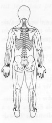
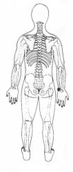

Trava de Segurança da Energia 17 - Terceira Profundidade.
|
 |
TSE 17 Energia de Reprodução.
Em situações de emergência ajuda a equilibrar o sistema nervoso. Ajuda a reduzir inchaços.
¬ Localizada na face externa do pulso no lado do dedo mínimo TSE 17.
M.e. segure o pulso direito no lado do dedo mínimo TSE 17. ®
|
 |
Notas:1 - M.d. = mão direita M.e. = mão esquerda.2 - O texto sublinhado indica que pode ser feito usando alternadamente o lado direito (mão direita) e depois o lado esquerdo (mão esquerda). 3 - Tocar a área indicada, com a ponta dos dedos da mão, durante alguns minutos ou até sentir uma pulsação rítmica. Não precisamos nos preocupar em demasia com a precisão da área indicada, pois cada trava de segurança da energia tem uma abragência de uns sete centímetros em torno de si.